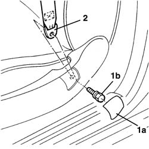
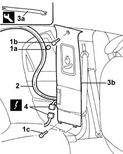

7040H38 CENTRE PILLAR TRIM UPPER ELEMENT (one), left or right - R.R.
- Path
- Procedures > 70 FITTINGS > 7040 BODY INTERIOR UPHOLSTERY AND TRIM > 7040H ROOF PANEL AND PILLAR LINING > 7040H38 CENTRE PILLAR TRIM UPPER ELEMENT (one), left or right - R.R.
- Kind
- repair procedure (removal / refitting; the operation number is the code)
- Applies to
- all engines; all production periods
- Interactive page
- https://sloeber94.github.io/elrnDB-lThss/en/#/458475
Applies to: all engines; all production periods
 Removing
Removing
 Refitting
Refitting- Move the front seat forwards into the end of travel position.
- Disconnect the negative battery terminal.
See in Op. 7040H36 CENTRE PILLAR TRIM LOWER ELEMENT (one), left or right - R.R.
1. Release the shield (1a) and undo the bolt (1b) fixing the front seat belt to the seat.
2. Remove the seat belt from the housing.

Applies to: all engines; all production periods
1. Release the protective cap (1a) and undo the bolt (1b) underneath and the lower bolts (1c).
2. Release the rer door housing seal.
- Carry out the same operation for the front door housing seal.
3. Release the pillar trim (3b) using the tool (3a).
 | Description | Code | Function |
|---|---|---|---|
3a | Knife | 1.878.077.000 | Removing centre pillar cover upper element |
4. Disconnect the electrical connector.
 | Description | Connector |
|---|---|---|
4 | Vent light on left pillar | G057 |
| Description | Connector |
|---|---|---|
4 | Vent light on right pillar | G058 |

Applies to: all engines; all production periods
Refitting
Removing- Connect the electrical connector.
| Description | Connector |
|---|---|---|
. | Vent light on left pillar | G057 |
| Description | Connector |
|---|---|---|
. | Vent light on right pillar | G058 |
- Fit the centre pillar trim in place.
- Fit the front and rear door housing seals in position.
- Tighten the bolts fixing the upper trim to the pillar.
- Press fit the bolt cover on the pillar.
- Tighten the bolt fixing the belt to the seat to the recommended torque.
 | Value - daNm | Fastening | Component | Ø |
|---|---|---|---|---|
. | 4 | Bolt | FRONT SEAT BELT END | 7/16" |
- Cover the fixing bolt with the guard.
See in Op. 7040H36 CENTRE PILLAR TRIM LOWER ELEMENT (one), left or right - R.R.
- Connect the negative battery terminal.
- Place the front seat in its original position.
Topics linked from this page (1)
Topics that link to this page (9)
- 5505C41 PASSENGER COMPARTMENT built in WIRING - R.R.
- 5580C40 sensor for side bag (one) lh or rh r r
- 5580C50 Head Bag module (one), left or right - R.R.
- 7030B12 SUN ROOF (assembly) - R.R.
- 7030B46 DRIVE CABLE (one), left or right - R.R.
- 7030B52 Sun roof glass support JOINTS/SLIDES - R.R.
- 7040H16 Roof LINING for versions with sun roof - R.R.
- 7065A12 FRONT SEAT BELT (ONE), LEFT OR RIGHT, WITH PRETENSIONER ON REEL - R.R.
- 7065A18 HEIGHT ADJUSTER for (one) front seat belt, left or right - R.R.